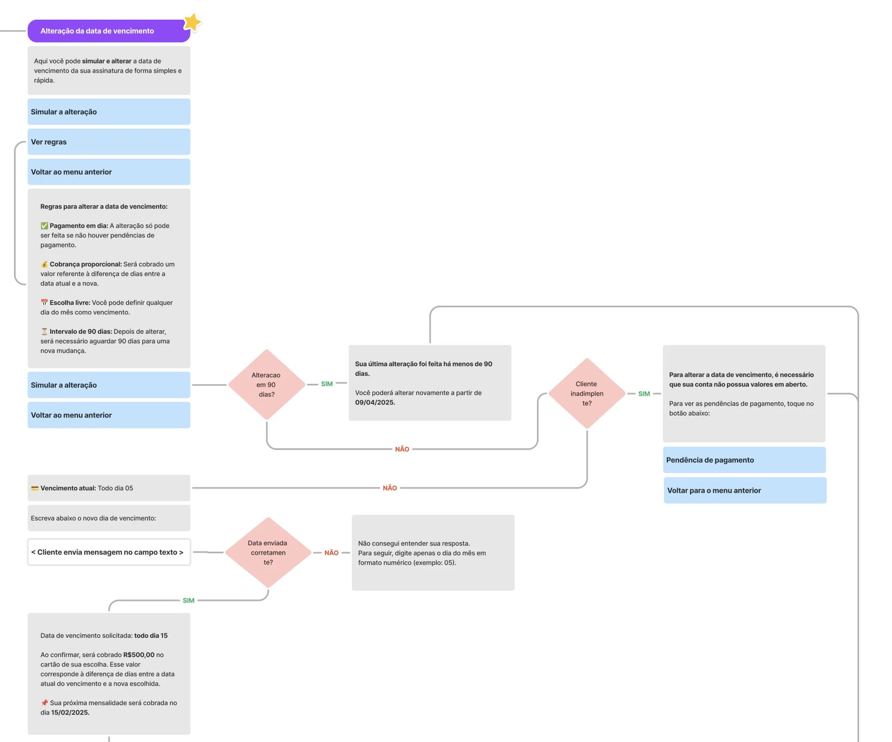
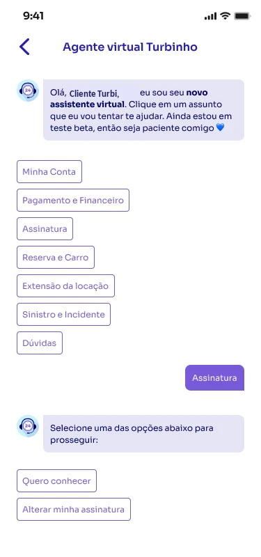
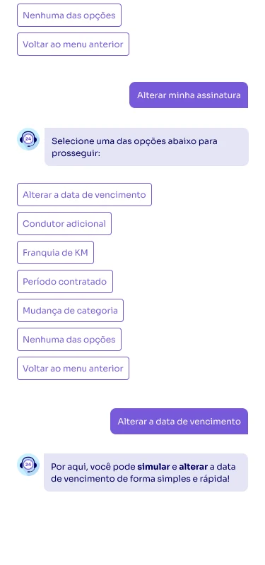
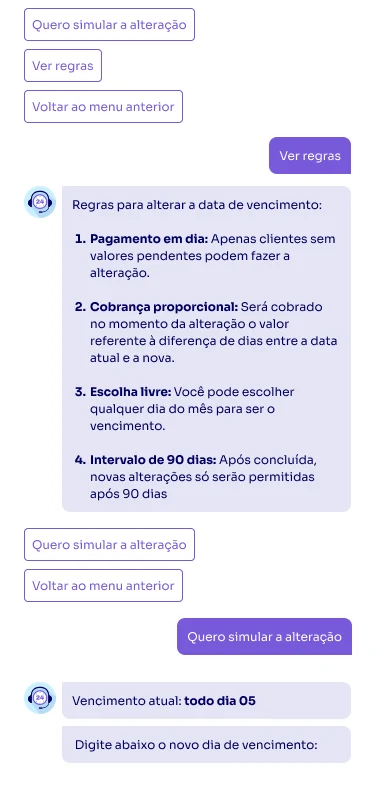
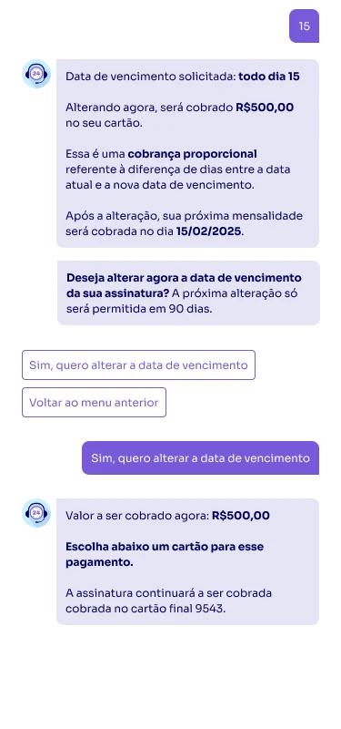
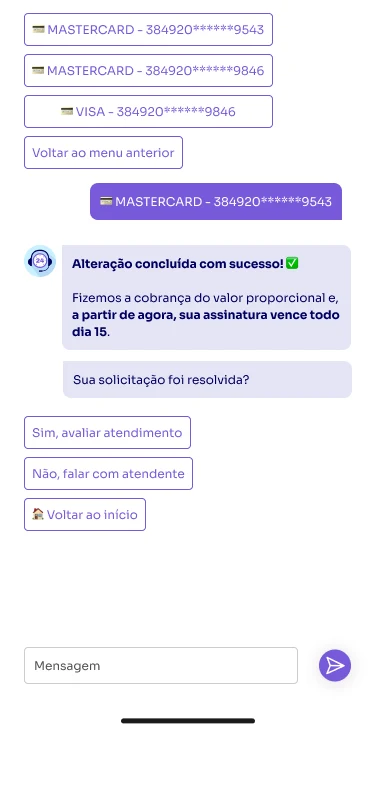
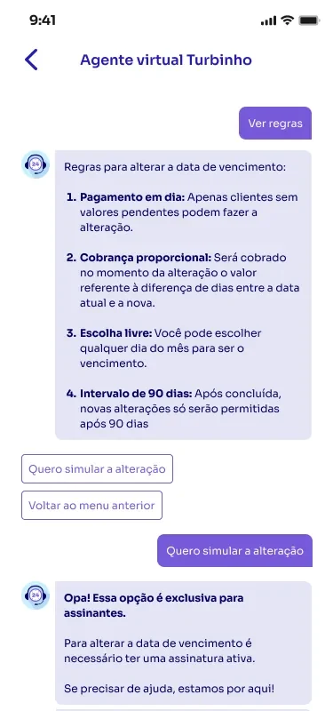

2025
Autosserviço via chatbot
Alteração da data de vencimento para a fatura de assinatura
Resumo
- Contexto
- A mensalidade da assinatura vencia sempre no dia da contratação e o cliente não tinha a possibilidade de mudar a data de forma autônoma, o que impedia contratações e gerava uma alta taxa de contato no atendimento.
- O que fizemos
- Desenhamos e colocamos no ar um fluxo de autosserviço no chatbot de pré-atendimento, em que o assinante muda a data de vencimento sem precisar falar com ninguém.
- Resultado
- Cerca de 80% de retenção no autoatendimento nas primeiras semanas, estabilizada em torno de 75%, e a entrega funcionou como planejado já no primeiro deploy.
A data de vencimento era definida a partir da contratação e ficava congelada ali. Quem assinou no dia 28 pagava no dia 28 pelo resto do contrato, mesmo que o fluxo do caixa pessoal fosse outro.
Era um problema pequeno na aparência e caro na prática, porque mexia em cobrança recorrente, em risco e na relação do cliente com o carro que ele usa todo dia e poderia ser retirado por uma falha no pagamento.
A gente faz essa alteração o dia inteiro, uma por uma, com um fluxo básico que já existe no backoffice.
Fomos entender os problemas do fluxo de assinatura analisando os motivos de contato ligados ao pagamento da fatura desse produto. A pergunta do discovery era: entre tudo que faz um assinante falar com a gente sobre cobrança, o que ele resolveria sozinho se pudesse?
O que foi feito
jan 2025
Análise de causa raiz no autoatendimento
Entendemos os problemas dos clientes a partir das transcrições dos tickets categorizados do tema que apareciam nos canais de atendimento.
fev 2025
Ajustes gerais na ferramenta
Antes de implementar o novo fluxo, precisávamos resolver problemas estruturais da ferramenta de chatbot que estava rodando em produção.
mar 2025
Definição das regras de negócio
Produtização que definiu todas as regras e critérios da feature, em um fórum multidisciplinar com as áreas envolvidas.
mar 2025
Fluxo e régua de comunicação
Definição de fluxo, telas, tom de voz e experiência do usuário.
abr 2025
Autosserviço no ar
O assinante passou a resolver no pré-atendimento, com simulação, edição e pagamento sem falar com um atendente.
abr a dez 2025
Acompanhamento e estabilização
Retenção medida semana a semana até o número estabilizar e entendermos que o transbordo restante precisava de análises manuais de negociação.
O risco era real e precisava entrar na regra
Nenhuma troca de data podia acontecer com pendência financeira em aberto. O cliente precisava quitar o débito, e isso virou uma condição explícita dentro do fluxo.
A comunicação era chave no sucesso da entrega
Não adiantava o autosserviço existir se o cliente só descobrisse o problema depois da falha. Junto com o fluxo entrou o aviso proativo de fatura a vencer, para ele trocar a data antes, se precisasse.
O fluxo precisava ser ponta a ponta
Da consulta de débitos à simulação do novo valor, passando pelos bloqueios por regra e pelo pagamento da pendência. Parar no meio transbordaria o cliente para o atendimento.
Cada regra de negócio ficou explícita no fluxo

Como ficou no app
Em 2025 esse fluxo foi implementado como chatbot com árvore de decisão. Recentemente atualizamos ele com uma nova ferramenta de LLM e conteúdo generativo.






~75%
de retenção no autoatendimento, já estabilizada
Retenção = o cliente conclui a troca sem cair no atendimento humano. Nas primeiras semanas o número passou de 80%, e o patamar se manteve depois do efeito de novidade.
85
de CSAT no fluxo, acima da média do atendimento na época
Medido na avaliação que o próprio assistente pede ao fechar o atendimento.
30 dias
entre a definição do escopo, o desenvolvimento, o teste e o deploy
Três em cada quatro pedidos resolvidos sem atendimento humano superou a expectativa da meta, que era de 50%. O cliente que entrava no fluxo caía ali corretamente e conseguia usar a ferramenta em todos os cenários mapeados.
A partir dela, outros autosserviços de gestão da assinatura entraram no roadmap, na mesma lógica de resolver antes do contato acontecer.
Gostou desse case? Bora conversar! :)